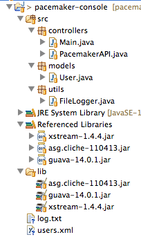

Objectives
Evolve the application developed in lab01 into a simple command line app. Incorporate commands for creating, deleting and listing users. Explore List, ArrayList, Map, HashMap in this context and introduce the guava and cliche libraries.
Setup
You should have a project from lab01 looking something like this:

This is an archive of the project if you dont have it completed:
Make sure you can import the application into eclipse and run it
Command Line Skeleton
We would like to create a small application to experiment with our User class.
Firsy, we need two components/libraries which will expidite some of the more mundane tasks. These are:
Locate the jar file from each of these projects, download and incorporate into your eclipse project (Use the guide on importing the xstream component in last week lab as a guide)
Your project should look something like this if the import has gone successfully.

Open Main.java, and replace its contents with the following:
package controllers;
import java.io.IOException;
import asg.cliche.Command;
import asg.cliche.Shell;
import asg.cliche.ShellFactory;
public class Main
{
@Command
public void createUser (String firstName, String lastName,
String email, String password)
{
}
@Command
public void getUser (String email)
{
}
@Command
public void getUsers ()
{
}
@Command
public void deleteUser (String email)
{
}
public static void main(String[] args) throws IOException
{
Shell shell = ShellFactory.createConsoleShell("pc", "Welcome to pacemaker-console - ?help for instructions", new Main());
shell.commandLoop();
}
}Run this application now, and explore the various commands (start with ?help).
We can annotate our commands with some help information which will turn up when you list the commands.
@Command(description="Create a new User")
public void createUser (String firstName, String lastName,
String email, String password)
{
}
@Command(description="Get a Users details")
public void getUser (String email)
{
}
@Command(description="Get all users details")
public void getUsers ()
{
}
@Command(description="Delete a User")
public void deleteUser (String email)
{
}Try this now and verify that the help text appears as expected.
We can also annotate the parameters:
@Command(description="Create a new User")
public void createUser (@Param(name="first name") String firstName, @Param(name="last name") String lastName,
@Param(name="email") String email, @Param(name="password") String password)
{
}
@Command(description="Get a Users details")
public void getUser (@Param(name="email") String email)
{
}
@Command(description="Get all users details")
public void getUsers ()
{
}
@Command(description="Delete a User")
public void deleteUser (@Param(name="email") String email)
{
}The following import will need to me included:
import asg.cliche.Param;for this to compile. See if you can generate the import using the auto-correct feature of eclipse.
Make sure now when you run the app that the correct help information appears for each command.
Users Feature
In the controllers package, create new class called "PacemakerAPI", containing the following:
package controllers;
import java.util.ArrayList;
import java.util.List;
import models.User;
public class PacemakerAPI
{
private List <User> users = new ArrayList<User>();
public List<User> getUsers ()
{
return users;
}
public void deleteUsers()
{
users.clear();
}
public User createUser(String firstName, String lastName, String email, String password)
{
User user = new User (firstName, lastName, email, password);
users.add(user);
return user;
}
public User getUser(String email)
{
for (User user : users)
{
if (email.equals(user.email))
return user;
}
return null;
}
public void deleteUser(String email)
{
User foundUser = null;
for (User user : users)
{
if (email.equals(user.email))
foundUser = user;
}
if (foundUser != null)
{
users.remove(foundUser);
}
}
}Read this class carefully - making sure you understand each method.
We will now rework Main to use this class to allow us to interact with the Users list:
public class Main
{
PacemakerAPI paceApi = new PacemakerAPI();
@Command(description="Create a new User")
public void createUser (@Param(name="first name") String firstName, @Param(name="last name") String lastName,
@Param(name="email") String email, @Param(name="password") String password)
{
paceApi.createUser(firstName, lastName, email, password);
}
@Command(description="Get a Users details")
public void getUser (@Param(name="email") String email)
{
User user = paceApi.getUser(email);
System.out.println(user);
}
@Command(description="Get all users details")
public void getUsers ()
{
List<User> users = paceApi.getUsers();
System.out.println(users);
}
@Command(description="Delete a User")
public void deleteUser (@Param(name="email") String email)
{
paceApi.deleteUser(email);
}
public static void main(String[] args) throws IOException
{
Shell shell = ShellFactory.createConsoleShell("pc", "Welcome to pcemaker-console - ?help for instructions", new Main());
shell.commandLoop();
}
}Again, this code will show numerous errors - all a result of accessing classes not imported. See of you can use autocorrect to import all the neccessary references.
Run the program - and verify that each of the commmands behave as expected.
toString
The command line app is a little underwhelming - particular the display of the User objects, which appear as some sort of memory address.
We can fix this my introducing a 'toString' method into the User class:
public String toString()
{
return firstName + ' ' + lastName +' ' + email +' ' + password;
}Run the app again, and verify that you can see the actual user details.
One of the libraries we imported:
contains some useful utilities for building toString. Introduce the following import into the top of the User class:
import static com.google.common.base.MoreObjects.toStringHelper;and rewrite toString as follows:
public String toString()
{
return toStringHelper(this).addValue(firstName)
.addValue(lastName)
.addValue(password)
.addValue(email)
.toString();
}Run the app again, and note the slightly changed representation of the Users.
We should commit this version now before making any more changes. Right click on the project in Package Explore, select Team->Commit - and fill out the form something like this:

The project might look something like this now:

See if you can figure out the meaning of the different decorations on the files.
Upgrade PacemakerAPI
PacemakerAPI currently uses a List data structure. It might make sense to rework this to use a Map - keyed on the email address.
First, redefine the users collection in PacemakerAPI to be a map:
private Map<String, User> users = new HashMap<String, User>();(import the libraries in the usual way)
This will require some changes to the api itself:
- getUsers will return a collection, not a list, of the user in the map:
public Collection<User> getUsers ()
{
return users.values();
}- putting a user into the collection will be different:
public User createUser(String firstName, String lastName, String email, String password)
{
User user = new User (firstName, lastName, email, password);
users.put(email, user);
return user;
}- searching for a user, though, becomes simpler:
public User getUser(String email)
{
return users.get(email);
}- as does deleteUser:
public void deleteUser(String email)
{
users.remove(email);
}There will be an error in Main when these changes are introduced (see if you can fix it). Verify that the app works as expected.
Commit these changes with a suitable commit message.
The creation of the Map is a little verbose:
private Map<String, User> users = new HashMap<String, User>();Java 7 simplifies this with a new syntax:
private Map<String, User> users = new HashMap<>();Eliminating the repetition of the type parameters.
If we are using maps - it is recommended that the hash functions used be associated with the actual (preferably unique) values in the object to be inserted into the container.
We should also strengthen the hash associated with the User class, as we are now storing it in a Map. The Guava libraries we have imported provide some guidance and support:
and we can refactor User to use its hash functions. First, import the requisite class:
import com.google.common.base.Objects;...and then implement the hash function to use our objects attributes:
@Override
public int hashCode()
{
return Objects.hashCode(this.lastName, this.firstName, this.email, this.password);
}Note the user of the 'Override' attribute - discussed here:
We should also add override to toString:
@Override
public String toString()
{
return toStringHelper(this).addValue(firstName)
.addValue(lastName)
.addValue(password)
.addValue(email)
.toString();
}IDs
We might wish to use IDs in addition to emails when referencing out users. The User class can be extended to include these attributes:
public class User
{
static Long counter = 0l;
public Long id;
//...
public User(String firstName, String lastName, String email, String password)
{
this.id = counter++;
//...
}We can think think of the principal users collection as the userIndex, and introduce a separate collection call emailIndex - which stores the same object against a different key for rapid access:
public class PacemakerAPI
{
private Map<Long, User> userIndex = new HashMap<>();
private Map<String, User> emailIndex = new HashMap<>();
public Collection<User> getUsers ()
{
return userIndex.values();
}
public void deleteUsers()
{
userIndex.clear();
emailIndex.clear();
}
public User createUser(String firstName, String lastName, String email, String password)
{
User user = new User (firstName, lastName, email, password);
userIndex.put(user.id, user);
emailIndex.put(email, user);
return user;
}
public User getUserByEmail(String email)
{
return emailIndex.get(email);
}
public User getUser(Long id)
{
return userIndex.get(id);
}
public void deleteUser(Long id)
{
User user = userIndex.remove(id);
emailIndex.remove(user.email);
}
}Review the above code - note getUser and deleteUser have been adjusted to use IDs.
The delete user command will need to be changed to use IDs instead:
public class Main
{
PacemakerAPI paceApi = new PacemakerAPI();
@Command(description="Delete a User")
public void deleteUser (@Param(name="email") String email)
{
User user = paceApi.getUserByEmail(email);
paceApi.deleteUser(user.id);
}
...Test this now - and verify that you can create and delete a user. Try to delete a user that does not exist - what happens? This is a classic null pointer exception .. occurring in the delete method above. A well known problem, discussed here:
We could, of course, just checked for it:
User user = paceApi.getUserByEmail(email);
if (null != user)
paceApi.deleteUser(user.id);Try this now and verify the absence of the exception.
The guava library has an interesting take on how to avoid the error:
.. and specifically recommends against the above style. They would propose the following version:
@Command(description="Delete a User")
public void deleteUser (@Param(name="email") String email)
{
Optional<User> user = Optional.fromNullable(paceApi.getUserByEmail(email));
if (user.isPresent())
{
paceApi.deleteUser(user.get().id);
}
}Commit these changes with a suitable message.
Exercises
Archive of project so far...
1: New Commands
Expand the Main class to include two new commands
- add-activity: this will add an activity to a specific user.
- add-location: this will add a location (latitude,longitude) to a specific activity.
If the user enters ?listall in the command prompt, then the should see this:
cu create-user (first name, last name, email, password)
gu get-user (email)
gu get-users ()
du delete-user (email)
aa add-activity (user-id, type, location, distance)
al add-location (activity-id, latitude, longitude)2: New Classes
Implementing this will require two new classes:
Activity consisting of:
- id
- type (string)
- location (string)
- distance (double)
Location:
- id
- latitude (double)
- longitude (double)
Model these classes on the structure of the User class - including toString and hash functions.
3: Relationships
The User class is to have a map of Activities something like this:
public Map<Long, Activity> activities = new HashMap<>();... and the Activiy class is to have a list of Locations:
public List<Location> route = new ArrayList<>();If all goes to plan, a transcript of a session at the command line might look like this:
Welcome to pcemaker-console - ?help for instructions
pc> cu homer simpsom homer@simpson.com secret
pc> gu
[User{0, homer, simpsom, secret, homer@simpson.com, {}}]
pc> cu marge simpson marge@simpson.com secret
pc> gu
[User{0, homer, simpsom, secret, homer@simpson.com, {}}, User{1, marge, simpson, secret, marge@simpson.com, {}}]
pc> aa 0 walk fridge .001
pc> aa 0 walk bar 1.0
pc> aa 0 run work 2.2
pc> gu
[User{0, homer, simpsom, secret, homer@simpson.com, {0=Activity{0, walk, fridge, 0.001, []}, 1=Activity{1, walk, bar, 1.0, []}, 2=Activity{2, run, work, 2.2, []}}}, User{1, marge, simpson, secret, marge@simpson.com, {}}]
pc> aa 1 walk shop 2.5
pc> aa 1 cycle shop 4.5
pc> al 3 23.3 32.3
pc> al 3 23.3 32.5
pc> al 3 23.3 32.6
pc> gu
[User{0, homer, simpsom, secret, homer@simpson.com, {0=Activity{0, walk, fridge, 0.001, []}, 1=Activity{1, walk, bar, 1.0, []}, 2=Activity{2, run, work, 2.2, []}}}, User{1, marge, simpson, secret, marge@simpson.com, {3=Activity{3, walk, shop, 2.5, [Location{0, 23.3, 32.3}, Location{1, 23.3, 32.5}, Location{2, 23.3, 32.6}]}, 4=Activity{4, cycle, shop, 4.5, []}}}]
pc>just to make it clear, this is a pretty printed version of the final command (you don't need to progam this):
pc> gu
[
User{0, homer, simpsom, secret, homer@simpson.com,
{ 0=Activity {0, walk, fridge, 0.001, []},
1=Activity {1, walk, bar, 1.0, []},
2=Activity {2, run, work, 2.2, []} } },
User{1, marge, simpson, secret, marge@simpson.com,
{ 3=Activity{3, walk, shop, 2.5,
[ Location{0, 23.3, 32.3},
Location{1, 23.3, 32.5},
Location{2, 23.3, 32.6}]},
4=Activity{4, cycle, shop, 4.5, []} } }
]